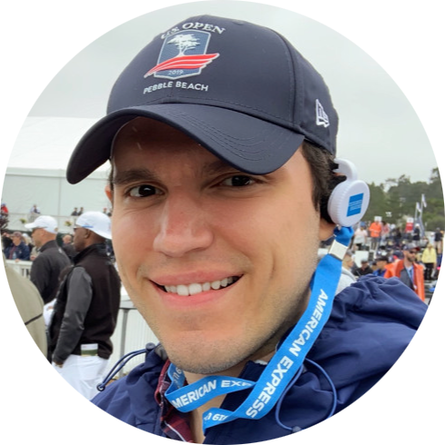

|  |
Andre Bueno
D. Sc. in Informatics
I am working on the development team of an integrated geo-mechanical
analysis system for studies on the genesis and mechanical development of
geological structures at Tecgraf Institute.
I am happy to announce my personal project:
"BandejApp", an Android app that shows the daily menu of the PUC-Rio's
popular restaurant called "Bandejão".
During my Masters I developed a methodology for Multi GPU programming
using OpenCL technology that resulted in an article published in April 2017
on the journal Engineering Computations.
During my Doctorate I created a methodology to evaluate the feasibility of
joining the relaxed synchronization technique with supervised learning
methods in order to obtain a final system that adapts to any triple
input/application/execution environment.
My work resulted in an article published in May 2020 on the journal
Future Generation Computer Systems.
|